1과목: 기계가공법 및 안전관리
1. 인벌류트 치형을 정확히 가공할 수 있는 방법으로 절삭공구와 공작물이 서로 기어가 회전운동을 할 때에 접촉하는것과 같은 상대운동으로 기어를 절삭하는 방법은?
2. 다음 중 구멍의 내면, 곡면, 내접기어, 스플라인 구멍등을 가공할 수 있는 공작 기계로 가장 적합한 것은?
3. 센터리스 연삭기의 장ㆍ단점에 대한 설명으로 옳은 것은?
4. 공기 마이크로미터의 장점에 대한 설명으로 잘못된 것은?
5. 정밀측정에서 아베(Abbe)의 원리를 가장 올바르게 설명한 것은?
6. W, Ti, Ta 등의 경질합금 탄화물 분말에 Co 또는 Ni을 결합제로 소결하여 제조한 절삭 공구의 재료는?
7. 복식공구대를 선회시켜 테이퍼 가공 시 테이퍼의 큰 지름을 D(mm), 작은 지름을d(mm), 테이퍼의 길이가 L(mm)일 때, 공구대의 선회각 a/2의 값은?
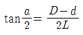
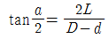
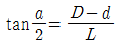
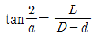
8. 전기도금과 반대 현상을 이용한 가공으로 알루미늄은 거울과 같이 광택있는 가공면을 비교적 쉽게 가공할 수 있는 것은?
9. 일반적으로 기계 절삭 가공시 안전 사항으로 틀린 것은?
10. 절삭속도 25m/min, 밀링커터의 날수 10, 지름 150mm, 1날 당 이송을 0.2mm로 할 때 테이블의 분당 이송속도는?
11. 연삭하려는 부품의 형상으로 연삭숫돌을 성형하거나, 성형 연삭으로 인하여 숫돌 형상이 변화된 것을 부품의 형상으로 바르게 고치는 가공은?
12. 구성 인선(built-up adge)의 방지 대책으로 틀린 것은?
13. 드릴 작업에서 절삭속도 18m/min, 회전수 115rpm일 때, 드릴의 지름은 얼마인가?
14. 롤러 중심거리가 200mm인 사인바로 각도를 측정하고자 할 때 게이지 블록의 높이가 각각 10mm과 110mm이었다면 각도 θ는 얼마인가?
15. 연삭숫돌의 결합제와 기호를 짝지은 것이 잘못된 것은?
16. 주철을 저속으로 절삭할 때 나타내는 일반적인 칩의 형태는?
17. 밀링머신에서 일반적으로 할 수 없는 가공은?
18. 선반의 부품 중 원판 안에 전자석을 설치하고 이것에 전류를 흘려보내면 척은 자화되어 일감을 고정시키는 것은?
19. 수가공에서 탭(tap)과 다이스(dies)를 이용하는 작업은?
20. 회전하는 상자속에 가공물, 숫돌입자, 가공액, 콤파운드(compound)등을 함께 넣고 회전시켜 서로 부딪치며 가공되어 매끈한 가공면을 얻는 것은?
2과목: 기계제도 및 기초공학
21. 탱크의 수면 밑 1m인 곳에서 지름 5cm인 구멍을 뚫을 때 유출하는 물의 속도(m/sec)는?
22. 지름이 d인 원형 단면의 단면2차 모멘트를 계산하는 식은?
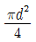
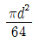
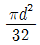
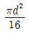
23. 반지름이 6cm이고 중심각이 70°인 부채꼴의 면적은 몇 cm2인가?
24. 400[W]/220[V]라고 표기된 전기히터에 220[V]의 전압을 가했을 때 히터에 흐르는 전류는?
25. 지름 60cm인 원형 핸들에 10kgf의 힘을 가하여 회전시켰다면 이 때 발생한 토크(kgf-m)는?
26. 2개의 저항 R1과 R2를 병렬로 접속하면 그 합성 저항은 얼마인가?
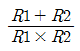
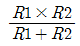
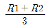
27. 힘의 3대 요소에 해당되지 않는 것은?
28. 컨베이어 시스템에서 물체가 5분에 9m 이동하였다면 이 컨베이어 시스템의 속도는?
29. 다음 중 응력에 대한 설명으로 틀린 것은?
30. 다음 단위에 대한 설명 중 잘못된 것은?
31. “윈도98”에서 시동디스크(부팅디스크)를 만드는 기능은 어디에 있는가?
32. Which of the following key strokes is able to ccp/it to the clipboard in WINDOW98?
33. 도스(MS-DOS)에서 “AAA”라는 디렉토리를 만들 때의 명령은? (단, 현제 디렉토리는 C:W임)
34. “윈도 98”에서 새로운 하드웨어를 장착하고 시스템을 가동시키면 자동으로 하드웨어를 인식하고 실행하는 기능은?
35. CPU 스케줄링 알고리즘에서 규정시간 또는 시간조각(glice)을 미리 정의하여 CPU 스케줄러가 준비상태 큐에서 정의된 시간만큼 각 프로세스에 CPU를 제공하는 시분할 시스템에 적절한 스케줄링 알고리즘은?
36. 컴퓨터 시스템의 성능을 최적화하기 위하여 사용되는 운영체제의 기능과 거리가 먼 것은?
37. “윈도 98”의 탐색기에서 비연속적인 여러 개의 파일을 선택하는 방법은?
38. UNIX에서 현재 작업중인 프로세스의 상태를 알아 볼 때 사용하는 명령어는?
39. 운영체제의 목적이 아닌 것은?
40. 컴퓨터 시스템을 구성하고 있는 하드웨어 장치와 일반 컴퓨터 사용자 또는 컴퓨터에서 실행되는 응용 프로그램의 중간에 위치하여 사용자들이 보다 쉽고 간편하게 컴퓨터 시스템을 이용할 수 있도록 제어 관리하는 프로그램은?
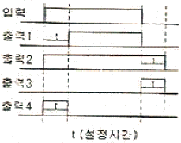
3과목: 자동제어
41. PLC의 온딜레이 타이머(on Delay Timer)출력 파형은?
42. RS 플립플롭(Flip-Flop)에서 세트(s) 입력에 O, 리세트(R) 입력에 1을 입력하면 출력(Q)는?
43. 다음 중에서 프로그램 로더의 주요 기능이 아닌 것은?
44. 다음 그림의 래더다이어그램을 논리회로로 변환한 것은?
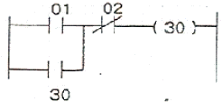
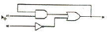
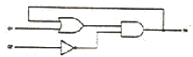
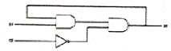
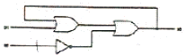
45. 다음 부울 대수식에서 틀린 것은?
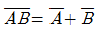
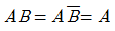
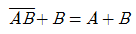
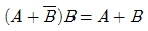
46. 제어용 각종 기기 중에서 주 회로의 단락사고 등에 의한 과전류로 부터 회로를 보호하는 장치로 사용되는 것은?
47. 다음 그림의 전달함수 (C/R)로 맞는 것은?
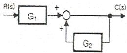
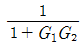
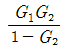
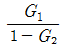
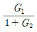
48. PLC의 스캔 타임(scan time)에 관한 설명으로 옳은 것은?
49. PLC의 입력 스위치로 사용할 수 없는 것은?
50. 다음 그림은 RS-232C 핀의 모양이다. 터미널 및 PC로부터 데이터를 전송하는 기능을 갖는 핀은 몇 번인가?
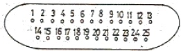
51. 2진수 101010을 10진법으로 표시하면?
52. 응답이 최초로 목표 값의 50%에 도달하는데 소요되는 시간은?
53. 다음 중 PLC 메모리부에 대한 설명으로 올바르지 않는 것은?
54. 시정수의 값은 1차 시스템에서 입력 스텝 함수에 대한 출력 변화가 전체 변화량의 약 몇 [%]에 이를 때까지의 시간인가?
55. 10진수 63을 나타낸 것 중 틀린 것은?
56. 다음 제어기 중 성격이 다른 하나는?
57. 다음 그림과 같은 블록선도에서 등가변환된 전달함수 [G(S)/R(S)]은?
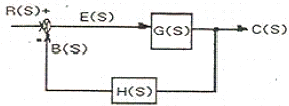
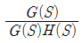
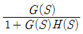
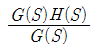
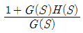
58. 자동제어의 장점에 대한 설명이 아닌 것은?
59. 3e-5t를 라플라스 변환하면?
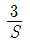
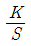
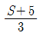
60. 상수 K를 라플라스 변환한 값은?
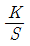
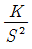
4과목: 메카트로닉스
61. 컨베이어를 이용한 자동화시스템을 설계하고자 할 때 기본 설계원칙에 해당되지 않는 것은?
62. 입력신호에 의해 출력이 발생되면 그 입력신호가 없어져도 출력 상태를 유지하는 방식은?
63. 자동화를 하는 중요한 이유가 아닌 것은?
64. 열전대를 부착하는 방법과 측정하는 방법에 따라 발생할 수 있는 오차가 아닌 것은?
65. 다음 검출용 기기중 구조가 간단하며, 접촉식 스위치의 대표적인 것은?
66. 그림과 같이 실린더의 안지름이 20mm이고, 로드의 지름이 6mm인 편로드 공압 복동 실린더에서 전진할 때의 최대 출력은 약 몇 kgf인가? (단, 공기의 압력은 6kgf/cm2, 효율은 90%이다.)
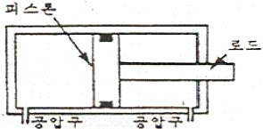
67. 변위 단계 선도(displacement step diagram)에 대한 설명으로 옳은 것은?
68. 제어 정보 표시 형태에 의한 시스템의 분류에 속하지 않는 것은?
69. 다음 진리값은 어떤 논리동작을 나타내는가?
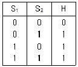
70. PLC의 시스템 구축시 문제가 발생하였을 때 다음 조치 사항 중 틀린 것은?
71. 액추에이터를 설계하거나 선정할 때는 충분한 검토를 거쳐야 한다. 다음 중 잘못된 사항은?
72. 8bit의 AD변환기로 표현할 수 있는 범위는 몇 가지 인가?
73. 다음 공압 실린더 중 비피스튼형이며 마찰이 적고, 행정이 짧은 실린더는?
74. 다음 중 모든 시간에 대하여 정보의 양이 연속적인 것은?
75. 다음의 센서 중 온도센서에 해당하는 것은?
76. 픔프에서 소음이 나는 원인이 아닌 것은?
77. 제어시스템 중 제어 프로그램에 의해 미리 결정된 순서대로 제어신호가 출력되는 순차적인 제어 시스템은?
78. 4개의 입력요소 중 첫 번째와 두 번째 요소가 함께 작동되던지 세번째 요소가 작동되지 않은 상태에서 네 번째 요소가 작동 되었을 때 출력이 존재하는 제어기의 구성을 논리적으로 표현한 것은?
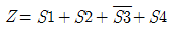
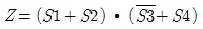
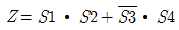
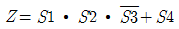
79. 플로우 차트를 작성할 때 다음 기호가 의미하는 것은?
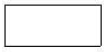
80. 공압 선형액추에이터 중 단동 실린더가 아닌 것은?